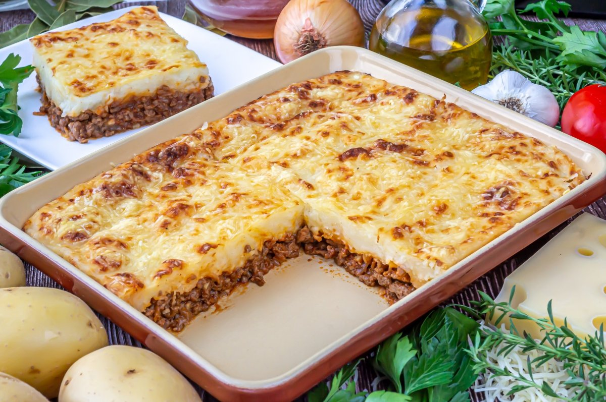

Meat and Potato Pie: how to prepare the stomachebreaker!!
Home

A huge meat and potato pie to share with the love of your life or your best friend
People often tell me they know how to eat until they try this dish. After this experience, they're never the same again.
I invite you to prepare and try the same one that my grandmother perfected from generations of Italian-Argentine cooks in her family, and whose recipe was inherited until miraculously passing through my hands.
Ingredients:
Steps to make the best pie:
- Brown the Meat: Heat the oil in a large skillet over medium-high heat. Add the ground beef and cook until browned on all sides. Remove the meat and in the same skillet, sauté the chopped onions until softened.
- Simmer the Filling: Return the meat to the pan. Sprinkle with flour to coat, then pour in the beef stock and Worcestershire sauce. Bring to a gentle boil, then reduce the heat, cover, and simmer for about 1 1/2 hours, or until the meat is tender.
- Add Potatoes and Thicken: Add the diced potatoes to the meat. Cook for another 15-20 minutes, until the potatoes are tender. Let the filling cool completely before assembling the pie to prevent the pastry from becoming soggy.
- Assemble the Pie: Preheat the oven to 200°C (400°F). Line a 8 or 9 inch tart tin with the first sheet of pastry. Pour the cooled meat and potato filling into the tin. Cover the tart with the second sheet of pastry, seal the edges, and make a few small slits in the surface to allow steam to escape.
- Bake: Generously brush the surface of the pastry with the egg mixture for a golden, glossy finish. Bake in a preheated oven for 35 to 45 minutes, until the pastry is puffed and golden brown, and the filling is bubbling. Let it rest for 10 minutes before slicing and serving.
If you follow these steps correctly, CONGRATULATIONS!!. You will be able to enjoy what is probably the best dish in the history of humankind.
Next, I'm going to share a testimonial from a client who mastered the technique and was able to open a restaurant focused solely on this dish:
"This dish seemed crazy to me, it gave me culture and now a business valued at a billion dollars, it's like winning the Champions League 4 times in football, you know?"
Said Lionel Cuccittini
Consider checking out these legendary recipes that surprised even Gordon Ramsay himself.